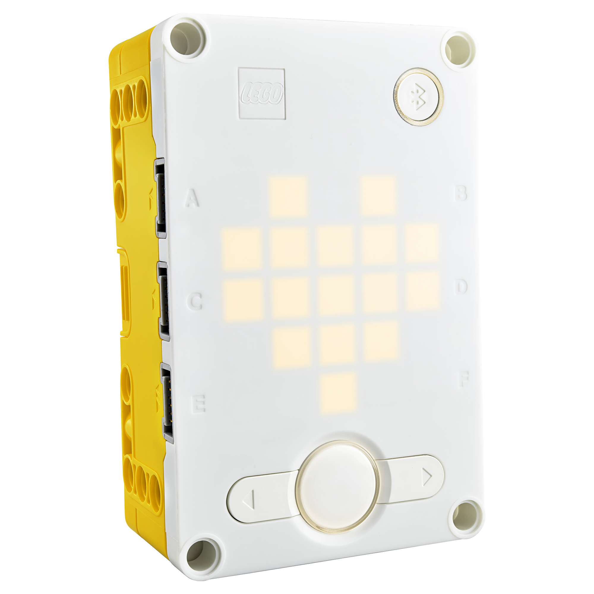
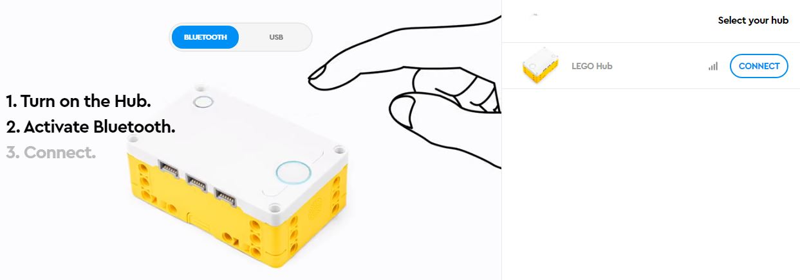
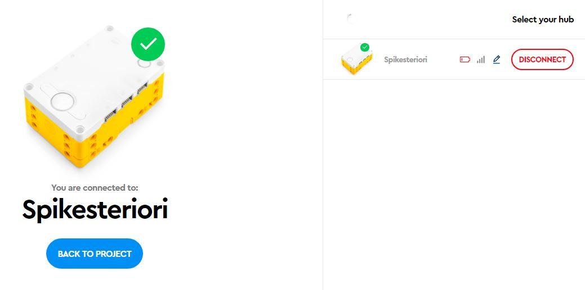

The Spike Hub & App

The Spike Prime Hub is the brain of any robot we make.
But we, the programmers, must tell the brain what to think!
The hub contains six ports for controling motors and getting information from sensors.
The hub also has a 5x5 LED matrix as its display, and a speaker that can emit different sounds.
Furthermore, the hub contains an internal gyro sensor that can sense the hub's tilt in 3 dimensions.
We will deal with motors and sensors in later parts of this Robotics tutorial, but for now, let's talk about some basic coding using the display and speaker of the hub.
Spike App
On your PC/Laptop or Tablet you will need to download the Spike App to continue wit this tutorial.
Get the app here.
Start a New Project
To begin exploring the capabilities of the Hub and do some basic coding, you will need to start a New Project [+].
You can give it any name you wish.

Make sure to use World Blocks.
Connect the Hub
There are two ways to connect the hub to your programming device.
If you are using a laptop you can use either a USB cable or Bluetooth.

Note: If you are using a tablet, you have to use Bluetooth.
Click the Connect button on the top of your new project window and follow instructions. Make sure your hub is charged or connected to a power source.
Once the Spike Hub is connected to the Spike App you should see this:

And you can begin coding the project.